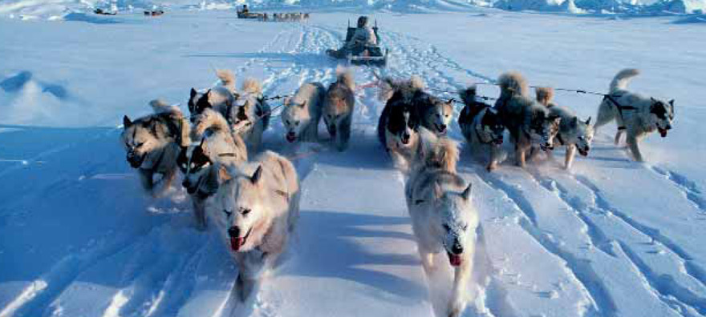

- 
Формат и содержание журнала «Крылья Арктики»
соответствуют принятым во всем мире стандартам классического бортового издания информационно-развлекательной тематики.
Главные принципы
Адресный, открытый и активный взгляд на мир, актуальность, позитивный настрой и информативность. Любой из пассажиров найдет на страницах журнала собеседника, с которым интересно в полете. Никакая тема не принимается журналом, если нет иллюстраций.
это беседы в пути
на актуальные, интересные
для читателя темы.
Главное – картинка, иллюстрация
Человек путешествует, чтобы видеть что-то новое, интересное. Поэтому, открывая журнал путешествий, пассажир прежде всего смотрит не на заголовок, а на фотографии. Если они заинтересуют, то читатель обратится к тексту. Авторы статей – попутчики на страницах журнала «Крылья Арктики» будут стремиться отражать интересы всех категорий пассажиров и выдерживать тенденции современной журналистики и дизайна.
Легкость и удобство восприятия будут достигнуты благодаря тщательной структуре восприятия, сегментированности разделов и рубрик, большому количеству фотографий, иллюстраций и графики.
Тематика статей подбирается таким образом, чтобы вне зависимости от пола, возраста, имущественного и социального статуса каждый пассажир нашел для себя интересного собеседника в полете.
ЦЕЛИ И ЗАДАЧИ
Скрасить часы ожидания
Помочь расслабиться, интеллигентно и ненавязчиво предложить интересную, увлекательную, полезную информацию.
Развлечь, дать пищу для ума
Создать ощущение комфорта для современного авиапассажира поможет свежий номер бортового журнала.
История северных стран
Дать информацию читателям об истории, достопримечательностях и развитии северных стран, прежде всего Ямало-Ненецкого автономного округа.
Хорошее настроение
Создать легкое, хорошее настроение у пассажиров во время полета. Это увлекательное чтение, красивые фотографии, полезная информация.

Авторы статей — попутчики
Авторы на страницах журнала «Крылья Арктики» призваны отражать интересы всех категорий пассажиров и отвечать тенденциям современной журналистики и дизайна.
Уникальность, сложность и одновременно преимущество бортового журнала является его нацеленность на широкую целевую аудиторию, которая представляет собой мужчин и женщин в возрасте от 18- 60 лет и семьи с детьми от 3лет.
рубрики
Содержание журнала
На страницах журнала размещаются увлекательные материалы о культуре и традициях, путешествиях, истории из жизни людей. Широкий выбор тем, авторские статьи, разнообразие жанров и подачи гарантируют интересное чтение для аудитории журнала.
Публикации информируют о достопримечательностях Ямала, российских и зарубежных регионов. От номера к номеру рубрики могут варьироваться.
Некоторые рубрики, такие как: «Советы профессионалов. Недвижимость, Банки. Экономика»; «Скорость»; «Здоровье и красота»; «Отпуск» и др. печатаются в большей степени по желанию заказчика.
предпосылки
По данным социологов
реклама в бортовых изданиях в целом воспринимается позитивно. Значительная часть пассажиров считает рекламные сообщения, опубликованные в журнале, полезными и интересными.
Статистика
читают бортовые журналы более 4/5 авиапассажиров. Подавляющее большинство пассажиров обязательно пролистывают издание. 60% тратят на чтение бортовых журналов от 30 до 120 минут. Вся информация воспринимается позитивно и с особым вниманием.
Эффективность рекламы в бортовых изданиях очень высокая:
опыт использования рекламных предложений бортового журнала имеет каждый седьмой пассажир. При этом среди владельцев и совладельцев предприятий, а также пассажиров бизнес-класса этот показатель вдвое выше.
портрет аудитории
Ежемесячная аудитория – 115 000 человек
Портрет составлен по данным партнеров по распространению журнала.